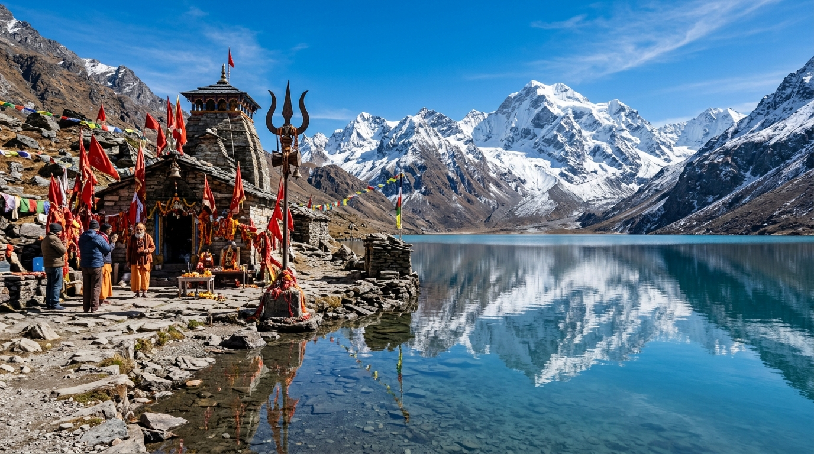

Behold the sacred miracle of Mount Om Parvat's natural snow 'ॐ' formation and immerse yourself in the turquoise sanctity of Parvati Sarovar at Chhota Kailash. Fully escorted by native Kumaoni guides with 100% Inner Line Permit assistance.
Based natively in Pithoragarh and Dharchula, we bridge the sacred devotion of pilgrims with military-grade high-altitude expedition logistics.
Born and raised in the Vyas and Darma valleys. Our guides have native knowledge of sacred legends, local dialects, weather nuances, and high-altitude bypasses.
No paperwork headache. We handle end-to-end SDM office documentation, Dharchula police clearance, and ITBP border checkpost stamping on your behalf.
Equipped with portable medical oxygen cylinders, pulse-oximeters, first-aid kits, and satellite communication linkages at Gunji, Nabi, and Jolingkong.
Experience authentic Rung Kumaoni hospitality in picturesque wooden homestays with hot, freshly prepared pure vegetarian sattvic meals.
From full sacred Kumaon road circuits to luxury helicopter aerial darshans, choose the itinerary that best suits your devotion and schedule.
 7 Days / 6 Nights
7 Days / 6 Nights
 5 Days / 4 Nights
5 Days / 4 Nights
 3 Days / 2 Nights
3 Days / 2 Nights
 8 Days / 7 Nights
8 Days / 7 Nights
Designed with gradual altitude acclimatization, ITBP checkpost protocols, and sacred darshan timings.
Begin your sacred pilgrimage early morning from Kathgodam Railway Station. Stop at the world-renowned Kainchi Dham Ashram of Neem Karoli Baba in Bhowali for morning blessings. Proceed through the scenic pine valleys of Almora and Pithoragarh, following the course of the Kali River into the border frontier town of Dharchula. Complete medical fitness review and prepare for Inner Line Permit verification.
Drive along the newly built high-altitude border road alongside the foaming Kali River. Pass through historical Himalayan hamlets of Malpa, Najang, and ascend through the breathtaking switchbacks of Chialekh Pass. Experience your first dramatic glimpse of alpine meadows carpeted with Himalayan wildflowers. Check-in at the picturesque traditional village of Gunji or Nabi for acclimatization.
Depart at dawn towards Jolingkong base camp. The breathtaking pyramidal peak of Mount Adi Kailash (5,945m) stands before you in sheer majesty. Walk gently to the sacred turquoise waters of Parvati Sarovar and offer prayers at the ancient Shiva-Parvati stone temple. Yatris who wish may trek to the higher glacier pool of Gauri Kund at the very foot of the peak. Return to Nabi for an evening cultural session.
Drive along the old Kailash Mansarovar pilgrimage route through Kalapani. Visit the sacred Kali Mata Temple, the divine origin of River Kali, and behold the curious snake-shaped Sheshnag Parvat. Proceed to Nabhidhang for the awe-inspiring darshan of Mount Om Parvat (6,191m), where pristine white snow naturally forms the sacred Hindu symbol 'ॐ' against black rock faces.
After breakfast and blessings from the local host family, begin the descent back towards Dharchula. Enjoy the changing Himalayan ecology from alpine meadows to lush sub-tropical forests. Arrive in Dharchula by late afternoon. Stroll across the suspension bridge connecting India and Nepal, and explore local Kumaoni wool markets.
Travel via the historic valley of Pithoragarh towards Jageshwar Dham, a cluster of over 124 ancient 7th-to-12th century stone temples nestled inside towering deodar cedar forests. Attend the serene evening Ganga Aarti and Rudrabhishek at the sanctum of the Maha Mrityunjaya and Jyotirlinga shrines.
Conclude your sacred pilgrimage with a visit to the famous Chitai Golu Devta Temple near Almora — known as the God of Justice, where thousands of brass bells hang as testimonies of granted prayers. Drive down to Kathgodam Railway Station in time for evening departures to Delhi (Shatabdi / Ranikhet Express).
According to the Skanda Purana and Mahabharata, Lord Shiva meditated here in Vyas Valley before his divine marriage with Goddess Parvati.
Elevation: 5,945 m / 19,505 ft
Known as the primeval abode of Mahadeva, Adi Kailash is one of the five sacred Kailash peaks (Panch Kailash). Nestled in the tranquil Vyas Valley of Uttarakhand, it is revered as the oldest seat of Lord Shiva's eternal meditation.
Elevation: 6,191 m / 20,311 ft
A cosmic geological miracle. The black rock fissures and snow deposits naturally etch the exact shape of the sacred Vedic syllable 'ॐ' (AUM) onto the mountain face. Among the eight revered Om peaks in the Himalayas, this is the only one discovered and visible to mortals.

Elevation: 4,500 m / 14,760 ftA crystal-clear, high-altitude glacial lake situated at the very base of Mount Adi Kailash in Jolingkong. On its tranquil shores stands an ancient stone shrine dedicated to Lord Shiva and Goddess Parvati, surrounded by fluttering red trishuls and sacred prayer flags.
The world-famed hermitage that transformed spiritual seekers worldwide. A mandatory blessing stop before entering the high mountains.
Considered one of the 12 Jyotirlingas in ancient texts. Towering 8th-century stone shrines inside dense cedar pine forests.
The sacred shrine hung with thousands of brass bells, where pilgrims pray for justice, safe travels, and divine protection.
The revered source of the holy Kali River. Overlooked by the serpentine stone formation of Sheshnag Parvat.
Because Vyas Valley borders Tibet and Nepal, government regulations require Inner Line Permits (ILP) and ITBP checkpoint clearance. Our team manages all red-tape seamlessly.
Send soft copies of your Aadhaar Card, passport-size photograph, and medical fitness form to our Pithoragarh team 15 days prior to travel.
Our native team processes your documents directly through the Sub-Divisional Magistrate (SDM) office and local police authorities in Dharchula.
Your verified Inner Line Permit is handed over to you in person upon arrival at our Dharchula basecamp before proceeding upstream.
Our expedition leader handles all checkpoint stamping with the Indo-Tibetan Border Police (ITBP) at Chialekh, Gunji, and Jolingkong.
Estimate your complete pilgrimage investment in real-time based on group size, vehicle tier, and travel month.
Real scenes from past journeys: the sacred Om snow formation, the crystal stillness of Parvati Sarovar, and vibrant Rung culture.
Read genuine feedback from families, senior yatris, and spiritual travelers who journeyed with us.
"Witnessing the miraculous ॐ on Om Parvat made tears stream down my eyes. The team from aadikailash.in took incredible care of my 68-year-old father. Daily oxygen checks, clean warm homestays in Nabi, and humble native guides."
"We were anxious about the Inner Line Permit and border checkposts. But aadikailash.in handled all paperwork in Dharchula before we even arrived! Their 4x4 drivers are masters of the hill terrain. The reflection of Chhota Kailash in Parvati Sarovar is unforgettable."
"The stopover at Kainchi Dham and Jageshwar Jyotirlinga completed our pilgrimage spiritually. Having freshly cooked warm sattvic food and hot water in remote high-altitude Nabi village exceeded all our expectations."
Clear, authentic answers to assist your pilgrimage preparation.
Expert local coordinator will contact you with day-wise itinerary & permit details